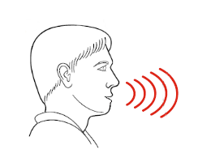

- Tinnitus basics
- What causes tinnitus?
- Living with tinnitus
- How can I manage my reactions to tinnitus?
- Can medications help?
- Can over-the-counter dietary supplements help?
- What methods have good research evidence?
- Does my tinnitus make it harder for me to hear?
- What should I do about my tinnitus?
- What if I need more help?
- What is Progressive Tinnitus Management (PTM)?
What is tinnitus?
Tinnitus is humming, ringing, buzzing, or other sounds in the ears or head.

How do you pronounce “tinnitus”?
“ti-night-us” or “tin-uh-tus” either is correct.

The most common cause of tinnitus is exposure to loud sound. Tinnitus can also be caused by head injury, medications, ear wax and many other causes. For many people it is impossible to know the exact cause of tinnitus.

Is there a cure for tinnitus?
A “cure” would be some way to make the tinnitus sound stop. Right now, there is no safe and consistent way to quiet tinnitus. However, there are many ways to feel better without making tinnitus quieter.
How can I feel better without making my tinnitus quieter?
You can feel better by learning how to manage your reactions to tinnitus.
This is detail view for Item 4
Medications used for tinnitus were developed for other problems like depression, anxiety, and trouble sleeping. Some of these medications can improve your mood. A better mood can help to make tinnitus less of a problem. In rare cases medications may make tinnitus quieter. However, medications can also make tinnitus louder. Because of possible side effects, the use caution with medications.

This is detail view for Item 6
This is detail view for Item 7
Many people have hearing problems along with tinnitus. Some people think hat the tinnitus causes their hearing problems which is not true.
Hearing problems are caused by hearing loss or problems processing sound. If you have tinnitus or hearing problems, you should have a hearing test.
This is detail view for Item 9
This is detail view for Item 10